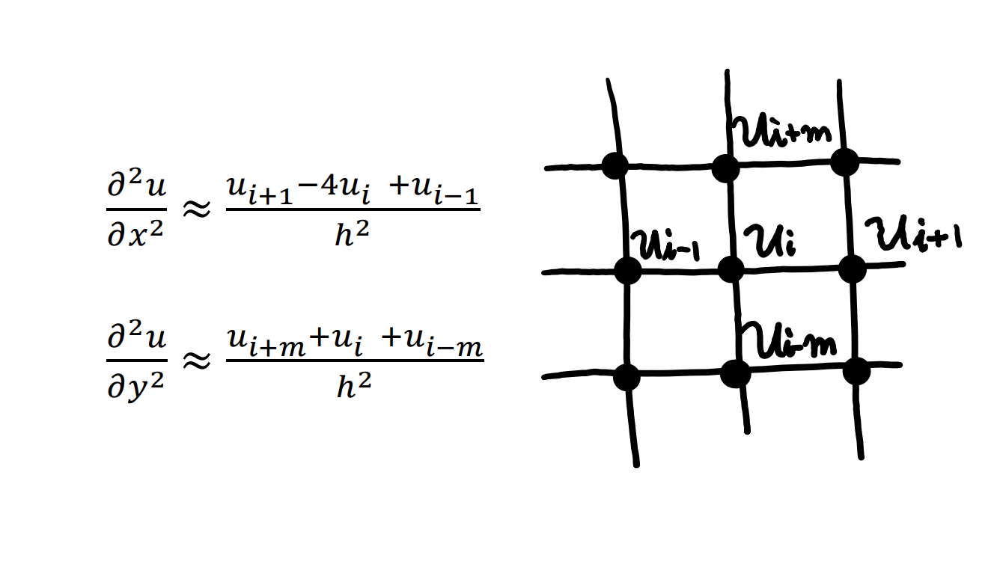
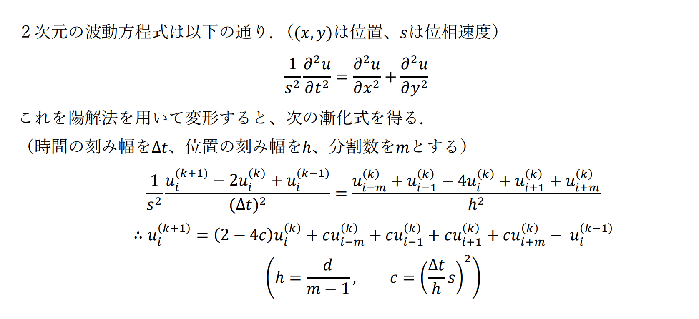

MATLAB
MATLABで勉強したことをここに記録していきます。
1.シミュレーション（波動方程式）
授業で「熱伝導シミュレーション」をMATLABを用いて行いました。「社会現象や物理現象をMATLABでシミュレーションせよ」という課題が出され、私は波動方程式の解の動きをシミュレーションしました。
期末課題について
１．目的：２次元の波動方程式を解いて、時間による波の変位をグラフで可視化する。
２．モデル化方法：範囲は一辺の長さが５の正方形とする。一辺の分割数をｍとし、節点における変位uを考える。このとき波の現象を離散化すると以下の通り。（節点と節点の間の長さをｈとする）
３．解法：陽解法を用いる。
上記の漸化式をMATLABプログラムで解いて、グラフに出力する。
作成したGUIアプリケーションがこちら↓
境界条件：０（正方形のふちにおいて、u=0）
境界条件：300（正方形のふちにおいて、u=300）